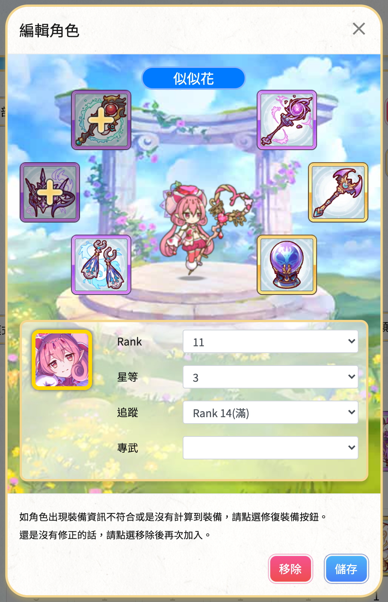
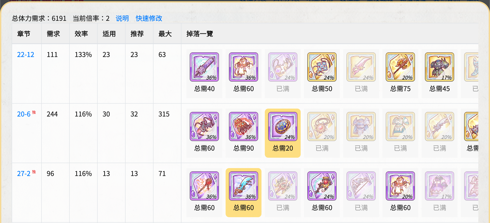

超異域公主連結☆Re：Dive 战队赛攻略
作者：繃帶美美、e5229846
超異域公主連結☆Re：Dive 战队赛攻略第一章 前期准备1. 设置和使用支援角色2. 队伍编成思路2.1 角色强度评价依据2.2 战队赛适用角色考量2.3 坦克和治疗角色问题3. 队伍编成要点4. 练角色推荐4.1 关于破防4.2 关于 Rank4.3 魔法破防角色4.4 魔法输出角色4.5 物理破防输出角色4.6 物理输出角色4.7 坦克型辅助角色4.8 治疗型辅助角色4.9 普通辅助角色4.10 普通坦克角色第二章 高性价比的装备扫荡方式1. 体力分配规划2. 使用蘭德索爾圖書館的裝備庫3. 使用基于图书馆装备库的最优化刷图规划插件第三章 战队赛实战1. 模拟战2. 半自动操作3. 抢开 UB 操作4. SL(Save/Load)第四章 使用机器人报刀1. 基本命令（必看）2. 进阶命令（可选）3. 更多命令第五章 参考资料
第一章 前期准备
1. 设置和使用支援角色
请在支援设定里把自己最强的物理/魔法破防角色挂出来，例如夏日真琴  、真琴
、真琴  、夏日凯留
、夏日凯留  、似似花
、似似花  、万圣镜华
、万圣镜华  等等。尤其是主角等级高的队友做这件事很重要。因为所有破防技能的效果都是直接跟技能等级成正比。主角等级越高，破防效果越好。
等等。尤其是主角等级高的队友做这件事很重要。因为所有破防技能的效果都是直接跟技能等级成正比。主角等级越高，破防效果越好。
一般来说相同角色战队里有一只高等级的足够，特殊情况可能同种角色需要不同星级和装备要求。除了上述破防角色外，可以查看战队赛的支援，其他战队赛需要的角色如果战队里没人挂或者很少有人拥有，自己又有该角色的情况，就应该把该角色挂到战队赛支援。有时候需要挂一些特殊的角色，具体看后面的角色介绍以及与战队队友的交流。支援栏应该尽可能保证多样性，满足队友不同 box 情况的借角色需求。
如果不是玛那极其缺乏的情况，战队赛一定要尽可能多使用支援角色弥补自己 box 和练度的不足，每天三次六天一共也才花 90 万。相比之下探索关卡每天扫荡两次即可获得 70 万，很超值。
如果真的极其缺乏玛那，下次月初玛那加倍记得每天花宝石买 30 次玛那（性价比最高）然后去扫荡玛那探索关，每日可以额外获得近 1500 万玛那。可以根据自己情况决定要买几天。
2. 队伍编成思路
2.1 角色强度评价依据
公主连结的角色设计非常优秀，每个角色都有自己的独特定位和适用场景，例如物理输出、魔法输出、坦克、治疗、辅助（提供物理/魔法攻击 buff、破防、加 TP、控制效果等等）。如果一个角色能同时做两个定位的事，那么就可以被称为强力人权角色。（注意：由于所有角色都可以升级到三星乃至五星，所以角色强度跟初始星级并没有必然关系。）
例如似似花  的 UB 既可以提升范围内队友魔法攻击力和 TP 上升，又可以制造出分身大幅提高自身输出，小技能还带有小幅度魔法破防能力。一个角色做了二个半角色做的事，所以全游戏最强当之无愧。而夏日凯留
的 UB 既可以提升范围内队友魔法攻击力和 TP 上升，又可以制造出分身大幅提高自身输出，小技能还带有小幅度魔法破防能力。一个角色做了二个半角色做的事，所以全游戏最强当之无愧。而夏日凯留  是另一例子，两个小技能分别有小幅度和中幅度魔法破防能力，UB 有强力魔法输出，自然比纯输出角色更强。
是另一例子，两个小技能分别有小幅度和中幅度魔法破防能力，UB 有强力魔法输出，自然比纯输出角色更强。
2.2 战队赛适用角色考量
对于未满级的萌新战队来说，战队赛适用的角色有以下这些考量：
- 战队赛绝大多数情况是与单一 boss 进行作战，输出角色一定是对单体伤害强化（UB 对单体目标造成特大伤害）的输出角色最合适。（偶尔遇到多目标的 boss，矛依未
 这类范围伤害角色也会有很好的效果。）
这类范围伤害角色也会有很好的效果。） - Boss 常常拥有高防御力，因此无论是魔法还是物理队，拥有「降低物理/魔法防御力」技能的输出角色都是核心，必须确保每队都要有。
- 三阶段会需要使用坦克和治疗角色才能确保全队生存打出可观伤害。
一个队伍只有固定五个位置，由于 boss 物防魔防都非常高，带破防技能的输出角色通常会需要占两到三个位置，剩下一到两个位置给纯输出，一个位置给辅助。以 110 级左右的平均等级和 Rank 来说，一、二阶段（第 1 - 第 10 周目）按照这样的方式编队通常都没有问题。但三阶段（第 11 周目以后）boss 伤害大幅度提高，没有坦克和治疗角色基本很难生存。这时候如果辅助位能同时提供治疗和坦克能力，那么就可以得到非常优化的队伍。例如新年可可萝、纯（黑骑）、六星优花梨（优花梨站位问题只能坦法队）等等。如果没有这些最优秀的辅助角色可以使用，那么就只能用普通坦克和治疗角色换掉辅助/纯输出角色，但绝对不能换掉核心的破防输出角色。
注意，战队赛的目标是在有限时间内尽可能打出更多伤害，不用上坦克能生存的情况就一定不要上坦克。
2.3 坦克和治疗角色问题
一些角色强度评测榜给出的结论通常是以满级玩家为前提。对于满级玩家来说由于角色等级和 Rank 都很高，即便在三阶段也可以只上输出角色不上坦，依赖高伤害的吸血效果获得生存能力。所以专职的坦克和治疗角色普遍评价不高。
对于平均等级 110 级左右的战队来说，三阶段和未来的四阶段坦克和治疗角色一定是必须的，这种情况可能至少会持续好几个月。因此最好确保自己坦克角色和治疗角色都各有 2 - 3 名可以使用。而且练坦克和强力治疗角色也可以帮助竞技场防守，收益很高。
3. 队伍编成要点
- 破防角色非常重要。无论物理还是法师队，一定要保证编组里有两位以上带有降低物理防御力/魔法防御力技能的角色。详细原因见【攻略】基本數值解說，文中图表和红色文字解释得非常清楚。
- 要尽可能多地使用支援角色以弥补自己 box 的不足。如果要出两队物理队，自己也需要拥有至少两名物理破防角色，两名破防角色一定要分开放到两队里，两队都再从战队租借一名高等级破防角色（一般选效果最好的真琴
 或夏日真琴
或夏日真琴  ），这样才可以确保总体破防收益最高。法师队同理。当前版本法队比较强势，法队推荐借似似花
），这样才可以确保总体破防收益最高。法师队同理。当前版本法队比较强势，法队推荐借似似花  或者夏日凯留
或者夏日凯留  ，具体视情况而定。
，具体视情况而定。 - 编队应该尽可能纯物理或者纯魔法输出，这样可以让全队享受到辅助角色提供的攻击力 buff。
- 把最强的角色编到同一个队伍，尤其是攻击力 buff 最高的辅助一定要给最强的输出队伍使用。
- 在租借支援角色时也要有如上考量，一定要把战队中等级最高的似似花给你最强的法师队。
- 如果不上坦和治疗能确保所有角色生存到最后，就不要上坦和治疗。
- 如果一个破防或者加攻击 buff 的角色没有输出能力，就尽量尝试换带输出能力的辅助或者纯输出角色看效果会不会更好。
- 尽量在晚上等待花掉当天所有体力提升队伍练度后再出刀，确保伤害最大化。
- 如果玛那储量充足，尽量将输出角色的所有装备提升到五星后再出刀。（因此升 Rank 一定要谨慎，如果升级 Rank 后无法穿满装备，不如留在当前 Rank 满强化所有装备战力高。）
- 根据以往经验，实战通常会比模拟战情况更糟糕一些，打出的伤害更低或是受到的伤害更高。因此如果模拟战发现可能有危险，就应该尝试上坦或治疗，尽量不要赌运气。
4. 练角色推荐
建议看完本小节后，在游戏内角色界面点右上角「我的队伍」，尝试根据自己 box 情况组出三支比较理想的队伍，然后再主练她们。每一支队伍都应该考虑选谁做支援角色，因此只需要四位自己的成员。
除优花梨和真步之外的绝大多数六星角色，在六星版本做出来之前都很弱势无法在战队赛中上场。可以使用可可萝笔记的六星预估功能了解自己是否可以在战队赛前做出特定角色的六星版本，以决定是否应该在本期战队赛前练该角色。
4.1 关于破防
几乎所有角色的破防技能效果都是跟技能等级，也就是主角的等级成正比，与其他任何属性无关。因此如果有必要用到一些纯破防工具人，例如杏奈（中二）、茜里（妹法），只要她们能生存，完全可以不必提到很高的 Rank。
一般情况下，所有破防角色小技能都是「小/中幅度降低魔法/物理防御力」，只有 UB 才会「大幅度降低魔法/物理防御力」。两者数值在角色 110 级时大致会是 50-80 左右和 100-200 左右。而即便是一阶段，boss 物理魔法防御力也高达 200，三阶段更是达到了 400 多，破防数值基本不可能溢出。在破防数值未溢出的情况下，boss 防御越接近零，每一点防御力降低数值提供的增伤就越高。因此我们一再强调破防角色一定是多多益善。
4.2 关于 Rank
所有角色的 Rank 推荐我们都参考了多个来源的攻略，没有特殊说明的都可以确保是该角色当前最佳的 Rank。非强势角色则是建议了较低的 Rank 避免浪费资源。110 级附近的多数玩家应该都没办法一次将所有角色提升到最佳 Rank，所以部分非核心角色的 Rank 建议以范围形式给出，大家可以量力而行。但为了确保三阶段能生存，核心输出破防角色和坦克角色应该升到 Rank 13 - Rank 15 左右。
简单来说，目前法队卡 Rank 14。辅助角色比如新年优衣  卡 Rank 11 - 12 只穿增加 TP 上升和 TP 减轻的装备，真步
卡 Rank 11 - 12 只穿增加 TP 上升和 TP 减轻的装备，真步  、优衣
、优衣  等角色卡 Rank 11 - 12，情人节静流
等角色卡 Rank 11 - 12，情人节静流  卡 Rank 12 只穿第二件魅影铠甲，以及夏日咲恋
卡 Rank 12 只穿第二件魅影铠甲，以及夏日咲恋  Rank 14 不穿防装。除了真步和优衣，其他角色 3 星不能升星。详情及其他角色可以查看第四部分参考资料中的 Rank 推荐表链接。卡 Rank 的目的是为了追求最高的 TP 上升数值，以更快放出 UB。可以通过蘭德索爾圖書館的角色數值比較表查看各个 Rank 下角色的 TP 上升和 TP 减轻属性变化来考虑应该卡哪个 Rank。
Rank 14 不穿防装。除了真步和优衣，其他角色 3 星不能升星。详情及其他角色可以查看第四部分参考资料中的 Rank 推荐表链接。卡 Rank 的目的是为了追求最高的 TP 上升数值，以更快放出 UB。可以通过蘭德索爾圖書館的角色數值比較表查看各个 Rank 下角色的 TP 上升和 TP 减轻属性变化来考虑应该卡哪个 Rank。
本次更新去掉了大部分角色的 Rank 推荐，建议直接参考目前我们能找到的最专业的日服玩家ヴァッシュTV 的 Rank 表 https://bbs.nga.cn/read.php?tid=22102374。
4.3 魔法破防角色
优先级按从上到下排列，加粗为必练强力角色。
 似似花（nnk）
似似花（nnk）
2 技能小幅度降低魔法防御力。大招制造出一个分身，并且展开魔法阵，对范围内的友方大幅增加魔攻和 15 TP 上升，持续18s。分身可以释放本体的小技能，循环一样，使得小技能的破防效果翻倍，且输出也很高，是兼具破防输出辅助的当前人权角色。在春黑刀不能出或者不理想的情况下，一般法队都建议借一次似似花，保证每次出击都有她。
 夏日凯留（水黑）
夏日凯留（水黑）
两个小技能都小幅度降低魔法防御力，覆盖率很高。一直很强势的法队破防输出角色。必须开专武。
 万圣镜华（猫仓唯，mcw）
万圣镜华（猫仓唯，mcw）
UB 中幅度降低魔法防御力，特大幅度提高全队魔法攻击力。强势法队破防魔攻 buff 辅助角色。
 霞（驴，普通形态）
霞（驴，普通形态）
辅助角色，自己几乎没有输出，95 级的霞大招即可范围内大幅度降低 230 点魔法防御力，在面对高魔抗 boss 时根据队伍角色搭配，可能会比夏日凯留更有效果。一些场合会使用到，新年凯留挂件之一，竞技场也很强力。专武保留 Lv1 可以最快开 UB。
 杏奈（中二）
杏奈（中二）
破防工具人。1 技能小幅度破防但有很优秀的覆盖率所以可能叠加。2 技能可以不升因为不死就永远不会放。必须开专武。
 茜里（妹法）
茜里（妹法）
破防工具人。UB 提供全队魔法攻击吸血能力，可以略微提高法队生存能力。但与圣诞伊利亚配合需要注意不要在圣伊 UB 前开妹法 UB，会导致圣伊普攻吸血提高血量从而降低 UB 伤害。
其中杏奈和茜里由于 UB 收益很低可以完全不开，从而避免消耗自身 TP，让主力输出角色获得更多被补 TP 的机会，非常适合跟新年凯留和圣诞伊利亚配合使用。
4.4 魔法输出角色
优先级按从上到下排列，加粗为必练强力角色。
 新年凯留（春黑）
新年凯留（春黑）
唯一神。缺点是需要很周全的加 TP 挂件角色，以及全程手动操作才能确保 UB 叠加出变态伤害。未满级玩家可能不太容易找到能直接抄的作业，需要自己研究手动时间轴。
 圣诞伊利亚（圣伊，
圣诞伊利亚（圣伊，伊利诞）
血量越低伤害越高，而且是前卫在法队中站位最靠前，可以通过受击快速攒 TP 并获得低血量条件打出高额伤害。在二、三阶段基本会需要治疗角色才能确保生存。同样基本需要手动操作，在尽可能低的血量，被打死前或被治疗前放 UB 才能伤害最大化。
圣诞伊利亚的 Rank 比较特别一些，如果 Rank 太高，在一二阶段可能会因为血线降不下去无法打出高伤害。如果 Rank 太低，在三阶段又很容易遇到生存问题。建议根据自己资源和角色整体练度决定是否要优先升高 Rank。
 露娜
露娜
主要用途是为新年凯留充 TP。但除此之外自己本身也是强力的魔法输出角色。最好手动操作确保有 5 个以上朋友时放 UB 获得最大伤害。建议 Rank 不要太高，武器不忙强化甚至可以暂时不装备，避免对队友伤害过高。
 安
安
专武一技能加全队 100 TP 或提高自己行动速度，二技能提供范围魔法攻击 buff 和加速，UB 对单体特大幅度魔法伤害。必须开专武。
 镜华（小仓唯，xcw）
镜华（小仓唯，xcw）
除非实在没有其他魔法输出角色可以组出队伍来，否则不推荐练。目前版本并不强势。
 夏日真步
夏日真步
除非实在没有其他魔法输出角色可以组出队伍来，否则不推荐练。目前版本比较弱。
4.5 物理破防输出角色
前两个角色优先级最高。
 克莉斯提娜（克总）
克莉斯提娜（克总）
小技能小幅度降低物理防御力，UB 必爆击高额伤害。专武后 1 技能给自己大幅加 TP，UB 循环会非常快，重新成为非常强势的物理破防输出角色。
 六星怜（剑圣）
六星怜（剑圣）
六星后由于 UB 提供的风之刃效果导致技能效果数值翻倍，成为当前版本最强物理破防角色。
 夏日真琴（水狼）
夏日真琴（水狼）
UB 破防能力仅次于六星怜。但是面对多目标王时 UB 会失去破防能力，绝对不能用于多目标王。破晓之星六星角色做出来之后出场空间会一定程度受到影响，看个人选择。
 真琴（狼）
真琴（狼）
UB 中幅度降低物理防御力。站位比较靠前而且体质较脆，最好能有高 Rank 确保生存。破晓之星六星角色做出来之后出场空间会一定程度受到影响，看个人选择。建议 Rank 13+ 满强化。
 矛依未（511）
矛依未（511）
站位很靠前，需要高 Rank 提升生存能力。小技能小幅度降低物理防御力。UB 持续范围伤害，对多目标王非常有效。破晓之星六星会影响到矛依未的登场机会，但大约四个月之后专武开放将会重登物理输出巅峰。
 插班生碧（生菜，
插班生碧（生菜，插碧）
弓箭手版本的狼。某些情况下前排压力大，上狼会死，就可以上插班生碧。破防数值和狼一样，因为站位靠后，可以让一些物理输出手站前排吃伤害打更多的 UB，自己在后排较安全。在保证不死的情况下 Rank 不必太高。
4.6 物理输出角色
优先级按从上到下排列，加粗为必练强力角色。
 六星日和（猫拳）
六星日和（猫拳）
六星后成为最强物理输出角色，战队赛、竞技场、露娜塔三开花。但非六星版本很弱势，如果战队赛前做不出六星版本，暂时不建议投入装备资源。竞技币兑换优先级最高。
 新年日和（春猫）
新年日和（春猫）
小技能特大幅度提升全队物理攻击力，UB 常有很高的暴击伤害。战队赛一直很强的物理输出+辅助角色。必须开专武。
 吉塔
吉塔
小技能中幅度提升自己 TP，小幅度提升全队 TP。战队赛一直很强的物理队输出+辅助角色。必须开专武。
 万圣美美
万圣美美
小技能特大幅度提高全队物理攻击力，UB 和小技能都造成大幅度 AOE 伤害，对多目标王效果会比较好。但是由于小技能带有小幅度降低全队魔法物理防御力的负面效果，可能会造成生存问题。
 惠理子（病娇）
惠理子（病娇）
小技能短时间内大幅度提高自身物理攻击力和物理暴击，需要手动开 UB 才能打出高额伤害。破晓之星六星后会变弱势一些，除非实在很缺物理输出角色，否则不建议练。
4.7 坦克型辅助角色
优先级按从上到下排列，加粗为必练强力角色。
 新年可可萝（春妈）
新年可可萝（春妈）
UB 赋予全队持续恢复 HP 状态，并大幅度提高物理攻击力。 目前最强势的物理队坦克型辅助，但本身体质偏软。升 Rank 16 基本已经是必要的选择。
 六星可可萝（租借）
六星可可萝（租借）
小技能提升全队行动速度。UB 中幅度恢复全队 HP，大幅度提高全队魔法物理攻击力，小幅度提高 TP 上升。由于站位问题，主要坦法队。物理队也可以在妈释放突刺技能冲到前排时手动开 UB 强行让她站到前排去坦，但是如果压力过大可能妈来不及攒出 UB 一号位就已经倒了。
4.8 治疗型辅助角色
优先级按从上到下排列，加粗为必练强力角色。
 六星优衣
六星优衣
六星后 UB 大幅度提高全队物理防御力并且提供全队行动速度两倍加速。成为非常强势甚至常常可以取代春田（自己取代自己）的治疗角色。建议 Rank 12 只穿右上角两件并满强化。专武保留 Lv1 可以最快开 UB。
 新年优衣（春田）
新年优衣（春田）
小技能中幅度降低魔法防御力，以及提高全队魔法攻击力。UB 显著提高全队生存能力。最适合法队的治疗型辅助。建议 Rank 11 或 Rank 12 只穿带有 TP 上升和 TP 减轻属性的装备并满强化。专武带 TP 上升建议升到最高。
 情人节静流（情姐）
情人节静流（情姐）
UB 制造的领域范围内中幅度提高队友物理攻击力、大幅度提高物理暴击伤害、小幅度提高 TP 上升。并且静流自己在领域内小技能会从单体治疗变成群体治疗。非常强势的物理队治疗型辅助。建议 Rank 12 只穿第二件魅影铠甲并只强化至四星。理论上专武保留 Lv1 可以最快开出 UB，但可能会导致治疗量不够，建议最多升到 Lv130。
 优花梨（酒鬼）
优花梨（酒鬼）
1 技能大幅度单体治疗，2 技能中幅度单体加 TP。UB 提供全队魔法无效屏障。六星后 UB 同时大幅度提高全队魔法防御力并小幅度恢复 HP，成为非常强势的万用辅助，所有场合都可以用上。地城币兑换优先度除空花外最高。建议 Rank 14。必须开专武。
 真步
真步
小技能单体治疗，UB 小幅度提高全队魔法攻击力和物理防御力，以及小幅度 TP 恢复。普通版本不算很强，但六星后会成为竞技场苟队的必备角色。由于六星已开，地城币兑换优先度仅次于优花梨。建议 Rank 11 满强化。必须开专武。
 美里（圣母）
美里（圣母）
UB 中幅度恢复全队 HP 并小幅度提高魔法防御力。1 技能大幅度提高范围内队友魔法攻击力，中幅度提高魔法暴击伤害。魔攻 buff 能力比春田更强一些。2 技能赋予一号位持续 HP 恢复状态，非常适合帮助提高圣诞伊利亚生存能力。除此之外日常刷 EX2 boss 也是必须的角色。但是因为圣诞伊利亚很难在三阶段上场，而且美里自身站位也很安全，所以不需要高星和高 Rank，地城币优先换到二星开专武后能打赢 EX2 boss 即可停手。建议 Rank 10 - Rank 11。必须开专武。
 六星可可萝（租借）
六星可可萝（租借）
说明与之前介绍相同。
4.9 普通辅助角色
 夏日咲恋（水电）
夏日咲恋（水电）
1 技能大幅度提高全队 TP，但该技能整场游戏 1:30 秒内只会释放一次。UB 大幅度提高全队魔法物理攻击力和行动速度。很多情况可以作为法队的坦使用。竞技场非常强的辅助角色，战队赛主要为新年凯留服务，在普通法队中效果也还不错。
4.10 普通坦克角色
优先级按从上到下排列，加粗为必练强力角色。资源短缺情况下所有坦克都可以不装备武器。
 公主佩可
公主佩可
高血量坦克，应对物理和魔法攻击效果都比较好，UB 不但给一次免死效果，输出还很高。很适合作为物理第二队的坦，搭配六星优衣同时提高全队生存能力和输出能力。
 六星佩可
六星佩可
因为是高血量坦克，应对物理和魔法攻击效果都比较好。竞技场防守队也是核心角色之一。
 空花
空花
推图必备小技能嘲讽高魔法防御高回复能力坦克，没有不练的理由。地城币优先度最高。必须开专武。
 宫子（布丁）
宫子（布丁）
小技能短时间内无敌并中幅度提升回避，大幅度提升物理防御力。布丁依然是最强的物理坦克。平均等级 110 级左右的战队，三阶段很可能只有布丁能稳定扛住五王的高额物理伤害。
第二章 高性价比的装备扫荡方式
1. 体力分配规划
正常情况下每月 15 日会开放主线冒险（NORMAL）2 倍掉落，也就是俗称的 N2。每月 25 日开放主线冒险（HARD）2 倍掉落，也就是俗称的 H2。25 日同时会开始当月战队赛。一般来说 N2 期间可以考虑放弃刷 H 关卡碎片，将尽可能多的体力分配用来扫荡装备。H2 期间则可以考虑适当重置重要角色的碎片关卡。
建议使用可可萝笔记进行不同阶段的体力分配规划，以便每天可以提前明确地知道可以有多少剩余体力用于装备扫荡或是 H 关卡碎片。目前基本的体力分配规划功能已经完善，之后我会抽时间完成用于不同时期规划的多配置功能。
2. 使用蘭德索爾圖書館的裝備庫
蘭德索爾圖書館裝備庫的简单用法不需要手动输入游戏内装备库存数量，虽然操作简单方便但只能得到比较优化的装备扫荡策略。如果需要最优化的装备扫荡策略，应该使用下一小节介绍的方法。但还是需要先阅读本小节弄清楚图书馆装备库的基本使用。
点击链接进入蘭德索爾圖書館裝備庫，点击左上角「加入角色」按钮加入你的主要角色。
点击角色头像进入编辑角色状态，将 Rank 和装备穿着情况设置为与游戏内完全一致。点击「追踪」选择本次 N2 期间期望到达的 Rank。

编辑角色时可以将暂时不需要练的角色「追踪」设置为「否」。不追踪的角色边框将显示为灰色，并且图书馆不会为她们计算装备需求情况。添加完角色后别忘了点击右上角蓝色的「储存队伍」按钮保存数据。所有数据会保存在当前浏览器，重启浏览器之后不会丢失。
点击角色列表下方的「地图掉落模式」，即可看到推荐扫荡的关卡。左边的「需求」数量是在上一步设置的队伍 Rank 追踪情况下，该关卡掉落的所有装备我们需要的总数量。一般来说，「需求」数量越高，刷该关卡性价比越高。但如果只从需求数量最高的关卡开始刷，可能会导致一些卡低 Rank 一两个装备的角色卡比较久。这种情况可以在右边输入卡的装备名称搜索只查看会掉落该装备的关卡，然后从中选择需求数量更大，或者附属掉落的装备也正好是急需的关卡优先扫荡。
3. 使用基于图书馆装备库的最优化刷图规划插件
图书馆的问题在于它只是将关卡按照掉落所需装备的需求数量进行排列，我们仍然需要人工判断决策到底应该扫荡那些关卡，以及各需要扫荡多少次，才能以尽量少的体力消耗换取尽可能多当前需求的装备。而这个决策过程实际上可以由计算机程序计算得出非常完美的答案，所以有玩家制作了这样的工具：[图书馆刷图规划插件][更新V2.2.1-内部修改装备]我的天，刚发现还有这么方便的东西！！
这个工具的形态是以用户脚本方式直接运行在图书馆网站上，所以需要支持用户脚本的浏览器，以及相应的浏览器扩展。访问 Greasy Fork 可以查看具体如何安装浏览器扩展。装好之后访问 PCR图书馆辅助计算器 即可安装该工具。
如果一切正常，现在访问蘭德索爾圖書館裝備庫，可以看到页面右下角多了三个按钮。首先点击「修改倍数」输入 2（不要输入 N2）。
点击角色列表下方的「地图掉落模式」，然后点击最右边出现的「道具栏」按钮。接下来需要在游戏内点击右下角「选单」，点击「道具」进入装备栏，并且将装备按稀有度降序排序。此时你会发现游戏内和图书馆的道具栏里装备顺序是一致的。对照游戏内的数据把所有道具的数量都手工输入过来吧。这一步操作会比较繁琐，但好在金色和银色装备由于两边都有，基本可以不用确认输入情况，直接输入一个数量后按 Tab 键跳到下一个文本框继续输入，这种盲打模式效率很高。紫色装备偶尔会遇到自己没有的，需要确认一下数字别填错位置了。输入完数据后直接关闭这个浮动窗口，然后立即点击页面右上方蓝色的「保存队伍」按钮，确保物品数据被妥善保存。
现在点击页面右下角的「计算结果」，可以看到它预估我们需要 6191 体力即可获得前面编辑好的 7 个角色升级到预期 Rank 所需的所有装备。我们需要按照它给出的关卡顺序进行扫荡。每次扫荡时将扫荡券张数直接设置为「适用」和「推荐」两个数字中最小那个。扫荡结束后不要关闭结果窗口。点击下图报告中的「快速修改」，然后将游戏内扫荡结果窗口中获得的装备数量加到图书馆的库存中。注意这个「快速修改」界面输入数字后需要按回车才能保存。完成之后点击「重新计算」，即可看到接下来还需要多少体力，以及应该扫荡哪个关卡。

我们在实际使用过程中发现这个工具在反复进行重新计算时，容易出现「快速修改」界面输入的数据无法被保存的烦人问题。但是该工具的源代码很混乱不太想深入研究，就简单粗暴地做了一下数据保存方式的修改，确保「快速修改」界面下输入的物品数量一定会自动保存到图书馆库存里（并且不需要按回车）。但副作用是每次使用「快速修改」更新库存后，必须刷新页面再点击「计算结果」才能得到正确的结果。不过即便如此，实际使用起来的整体稳定性和界面响应可能都比原版更好。如果你想尝试这个版本，可以访问 https://github.com/lolita-id/pcr-wiki-helper 点击页面最下方的 PCR-Wiki-Helper 进行安装。
第三章 战队赛实战
1. 模拟战
务必使用模拟战测试自己的队伍组合，找出伤害最大化的三个队伍组合。具体策略在第一部分第 3 小节「队伍编成要点」中有详细叙述，不再重复。
2. 半自动操作
建议尝试半自动操作，这并不会多花费多少时间。尤其对物理队来说，半自动操作可以明显提高整体伤害。但是应该先在模拟战里练习和测试好，如果操作不当，可能会导致整体伤害反而比全自动更低。
方法是刚进入时不要开自动，手动操作确保辅助和破防角色的 UB 最先放，然后立即开自动。某一期物理队实测这样操作后可以多打将近 20 万伤害。
3. 抢开 UB 操作
开自动模式时可以通过快速点击角色头像抢开 UB，通常可以将 UB 提前 1 秒左右。实测在某些情况下，部分重要角色的 UB 抢开有非常关键的提高生存和伤害能力作用。
4. SL(Save/Load)
如果实战打到最后一两秒发现伤害离模拟战伤害差距较大，可以使用 SL 操作重来一次。但注意战队赛每天只有一次 SL 机会。
具体操作方式：在最后一两秒战斗尚未结束，屏幕右上角出现 CONNECTING 字样之前，点击右上角暂停游戏，然后强行关掉游戏重新进入。
第四章 使用机器人报刀
注意，本章为 HoshinoBot 的基本使用方法。如果你的战队采用其他 bot 则不适用。
1. 基本命令（必看）
所有命令在群聊天窗口直接输入即可，命令前的感叹号必须存在，半角或全角符号都可以。
每次出刀后到群里使用命令
!出刀 <伤害值>上报伤害，伤害可以填写完整数字，也可以使用万单位w缩写。xxxxxxxxxx!出刀 514w出尾刀时必须使用
!尾刀命令，且不需要填伤害数值。否则可能会因为之前报刀记录使用万级别的大致数字，导致计算出现误差 boss 不死。xxxxxxxxxx!尾刀尾刀后如果获得补偿刀，需要用
!补时刀命令额外再报一次刀。实际战斗两场，报刀自然应该是两次。xxxxxxxxxx!补时刀 114w不慎失误伤害远不如预期高时，使用命令
!挂树等待救援。Boss 被队友击杀并报刀后，机器人会在群内自动通知挂树的队员。xxxxxxxxxx!挂树
2. 进阶命令（可选）
忙于工作/学习/娱乐时，使用命令
!预约 <Boss号>预约出刀。队友推进进度达到该 boss 后，机器人会在群内自动通知你。xxxxxxxxxx!预约 5查看攻略进度。
xxxxxxxxxx!进度
3. 更多命令
直接参考 HoshinoBot 的帮助文档。
第五章 参考资料
- 漪夢奈特的練角大補帖※五月更新版本
- 漪夢奈特的6月聯盟戰練角推薦
- 【閒聊】2020/6月Rank16-4&星級專武推薦表 無羽 nonplume 的 Rank 推荐表。
- (超異域) 公主連結 Re:Dive 各家角色育成推薦對照表 对比几位常做攻略的台湾玩家的 Rank 推荐表。
- [日服相关] [游戏攻略] 角色RANK等级推荐(2020年6月) 搬运自日本玩家的攻略，感觉他很专业。
- 蘭德索爾圖書館角色列表 可以查看全角色技能信息，并且可以看到指定等级、Rank 和星级下的基本状态及技能效果数值。